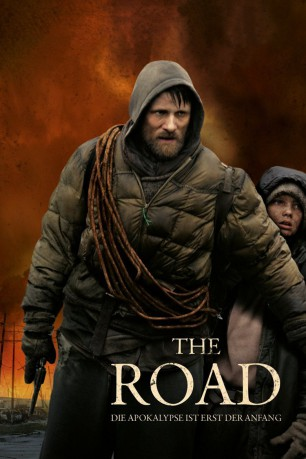

#878 The Road
 
 IMDB-Wertung: 7.3 / 10
IMDB-Wertung: 7.3 / 10  Metascore: 64
Metascore: 64 
Die Welt wie wir sie kennen, gibt es nicht mehr. Nach einer globalen Katastrophe sind die wenigen Überlebenden auf der Suche nach Nahrung und Rettung. So auch ein Vater und sein Sohn. Sie durchstreifen Amerika, das ein von Schutt und Dreck bedecktes Ödland darstellt und wo kaum noch Pflanzen und Tiere existieren, mit einem Einkaufswagen bepackt mit ihrem letzten Hab und Gut. Sie gehen Richtung Süden, in der Hoffnung am Ozean eine bessere und lebenswertere Umgebung vorzufinden.
Jahr: 2009
Dauer: 111 Minuten
FSK: 16
Land: USA Studio: Dimension FilmsTonspuren:
Untertitel: Deutsch,
Auflösung: 720p (1280x544) Größe: 4485 MB
Genre: Abenteuer, Drama
Regisseur: John Hillcoat
Drehbuch: Joe Penhall, Cormac McCarthy
Soundtrack: Nick Cave, Warren Ellis
Darsteller:
 Viggo Mortensen als Man
Viggo Mortensen als Man Kodi Smit-McPhee als Boy
Kodi Smit-McPhee als Boy Robert Duvall als Old Man
Robert Duvall als Old Man Guy Pearce als Veteran
Guy Pearce als Veteran Molly Parker als Motherly Woman
Molly Parker als Motherly Woman Michael Kenneth Williams als Thief
Michael Kenneth Williams als Thief Garret Dillahunt als Gang Member
Garret Dillahunt als Gang Member Charlize Theron als Woman
Charlize Theron als Woman Bob Jennings als Bearded Man
Bob Jennings als Bearded Man- Kirk Brown als Bearded Face
 Jack Erdie als Bearded Man #2
Jack Erdie als Bearded Man #2- Gina Preciado als Well Fed Woman
 Jeremy Ambler als Man In Cellar #1 , uncredited
Jeremy Ambler als Man In Cellar #1 , uncredited Aaron Bernard als Militant , uncredited
Aaron Bernard als Militant , uncredited- Paul Hodge als Militant , uncredited
- Wilson Moore als Boy running from cannibals , uncredited
- Nick Pasqual als Militant , uncredited
- Brenna Roth als Road Gang Member , uncredited
- Mark Tierno als Baby Eater , uncredited
- Agnes Herrmann als Archer's Woman
- Buddy Sosthand als Archer
- David August Lindauer als Man On Mattress
- Mary Rawson als Well Fed Woman #2
- Kacey Byrne-Houser als Woman In Cellar , uncredited
- Jarrod DiGiorgi als Well Fed Man , uncredited
- Frederick E. Kowalo als Militant , uncredited
- Chaz Moneypenny als Man In Cellar #2 , uncredited
- Paul J. Rosenburg als Cannibal , uncredited
Datei: X:\2009(N-Z)\Road, The (2009, FSK16, 1280x544).mkv seit 10.04.2015
Festplatte: HD 2009(G-Z)-2010(A-F)
 Es gibt insgesamt 99 Filme in der Gruppe '2009(N-Z)'
Es gibt insgesamt 99 Filme in der Gruppe '2009(N-Z)'